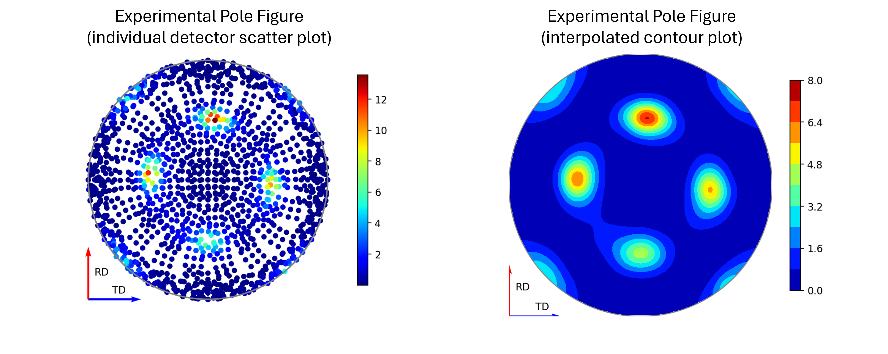

Diffraction Changes#
Powder Diffraction#
New features#
AlignAndFocusPowderSlim can skip loading particular logs using the (mutually exclusive)
LogAllowListandLogBlockListproperties.AlignAndFocusPowderSlim can now filter out bad pulses during loading by setting the
FilterBadPulsestoTrue(cutoff can be adjusted withBadPulsesLowerCutoff).AlignAndFocusPowderSlim now allows different binning to be specified for each output spectra by setting
XMinorXMaxto a list of values.AlignAndFocusPowderSlim now allows different input binning units by setting the
BinningUnitsproperty to one of"dSpacing","TOF"or"MomentumTransfer", the default being d-spacing. The output will always be in time-of-flight.AlignAndFocusPowderSlim can do event filtering with a Splitter Workspace when the
SplitterWorkspaceproperty is set. This can be done only with a single output workspace and when filtering on pulse time.PDConvertRealSpace and PDConvertReciprocalSpace will not get added to the algorithm factory if PyStoG is not installed. This package is now an optional dependency of Mantid. For more information on PyStoG, see the PyStogG docs.
In Polaris reduction,
merged_S_of_Q_minus_oneworkspace is output before applying Fourier filter to the PDF. To differntiate this from the resultant workspace after applying the Fourier filter and reverse transformed, the corresponding workspace was renamed from*_merged_Qto*_merged_Q_r_FT.Added parameter
wavelength_limsto Polaris diffraction to crop focussed data by wavelength before calculating the pair distribution function (PDF).Added parameter
r_limsto Polaris diffraction to specify min and max r-value in output PDF.Updated default TOF cropping values for focussed banks for
mode="pdf"in POLARIS Polaris diffractionSNSPowderReduction has been updated to more correctly apply absorption corrections.
Bugfixes#
Updated zero-padding for GEM and ALF (ISIS instruments) so that users can load runs from ALF00090565 and GEM00097479 onwards.
A bug in DiffractionFocussing where
NaNdata values were introduced when explicit binning domains were requested that exceeded the actual input-data domains has been fixed. This bug only occurred whenPreserveEvents=False.Fixed a potential crash when running DiffractionFocussing from the algorithm dialogue and setting
InputWorkspaceto a workspace group.The
InputWorkspaceproperty of DiffractionFocussing can no longer take workspaces in TOF (deprecated 29/04/21).
Engineering Diffraction#
New features#
Add module of classes in
Engineering.pawley_utilsto perform Pawley refinements for focussed spectra and 2D Pawley refinements for POLDI (frame overlap diffractometer).Support batch refinement for multiple focussed (.gss) files using a single instrument group (.prm) file in the GSASII tab of the Engineering Diffraction interface GUI. Note the .prm file should have the same number of groups as the number of spectra in an individual .gss file.
Removed support for specifying multiple focussed .gss files (e.g. one for each bank in ENGINX) for a single instrument group (.prm) file in GSASII tab of the Engineering Diffraction interface GUI.
Texture Analysis can now be performed using the logic included in
Engineering.texture.TextureUtilsand a collection of scripts that can be found indiffraction/ENGINX/Texturewithin the mantid script repository.
Focusing using the
focus_runmethod inEngineering.EnggUtilswill now save a combined workspace with all detector groups’ spectra, rather than saving each spectra in a separate workspace.Performance improvements have been made to PoldiAutoCorrelation v6 and a function to simulate POLDI 2D workspace.
New property
InterpolationMethodadded to PoldiAutoCorrelation v6. The default value"Linear"preserves existing behaviour (linear interpolation), and"Nearest"can be used for faster execution.
{kind=link}
Single Crystal Diffraction#
New features#
LoadWANDSCD will now load the sample environment logs.
New algorithm FindUBFromScatteringPlane to find UB Matrix given lattice parameters, scattering plane and 1 peak for a sample.
Add
UpdateUBoption to IndexPeaks v1 that saves the optimized UB matrix in the case where there is a single run andCommonUBForAll=False.